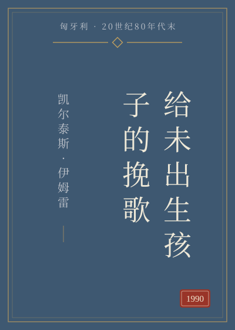
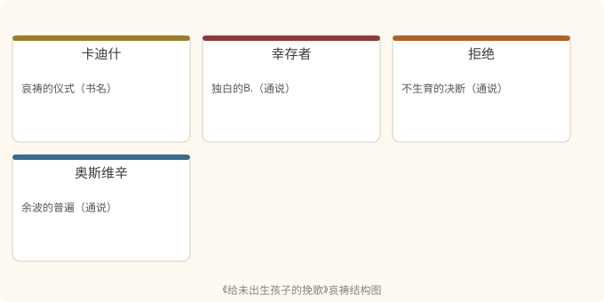

给未出生孩子的挽歌
一、基本信息
| 作者 | 凯尔泰斯·伊姆雷 |
|---|---|
| 成书/出版 | 1990年（Britannica B379：Kaddish for a Child Not Born (1990)） Imre Kertesz — Encyclopaedia Britannica（百科全书） |
| 国别/地区 | 匈牙利 |
| 时代 | 近代 · 20世纪80年代末 |
| 体裁 | 长篇小说 |
| 语言 | 匈牙利语 |

《给未出生孩子的挽歌》哀祷结构图（主题·结构图）
二、创作背景
Britannica（B379）：Kaddish for a Child Not Born (1990)——作品列表。
Britannica（B379）：凯尔泰斯——2002诺奖；《无命运的一生》为其代表作（交叉）。
题材（通说待核）：幸存者的独白——'不生孩子'的决断与集中营的余波。
三、内容脉络
（通说待核）'卡迪什'（犹太哀祷）：向未出生的孩子解释。
（通说待核）'奥斯维辛的普遍性'论（通说待核）。
四、主要人物表
| 人物 | 身份 | 说明 |
|---|---|---|
| B. | 幸存者/叙述者 | （通说待核） |
五、主题与艺术特点
- '给未出生孩子'的哀祷（书名语境——通说待核）。
- 幸存者的'普遍'宣称（通说待核）。
- 拒绝生育的伦理（通说待核）。
六、影响与评论
- Britannica：Kaddish for a Child Not Born (1990)（B379）。
Imre Kertesz — Encyclopaedia Britannica（百科全书） - Britannica：2002诺奖（B379 交叉）。
Imre Kertesz — Encyclopaedia Britannica（百科全书）
七、阅读建议
难点
- '卡迪什'的仪式语。
- '普遍化'的论战（通说待核）。
- 《给未出生孩子的挽歌》中译名（《无命运者的挽歌》）待核。
- 匈牙利文原版。
凯尔泰斯第二作；承接《无命运的一生》。
八、待核实
- 叙述者B.名核对（通说）。
- 1990年出版细节待核。
- '卡迪什'仪式细节待核。